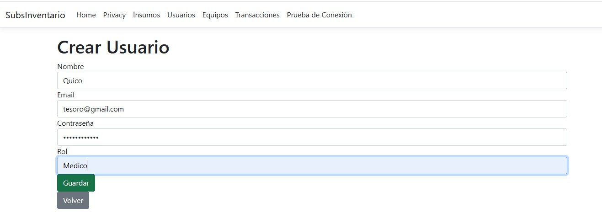
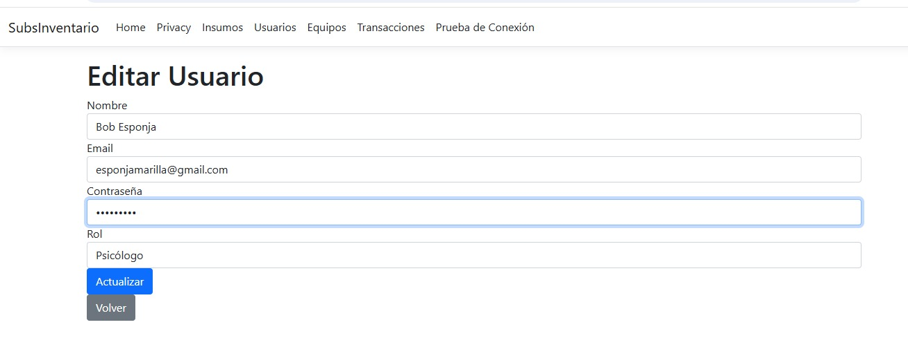

Se realizo el CRUD para el subsistema de Inventario en el cual se muestra el formulario que se implemento para registrar Usuarios.
Se muestran los registros que existen los cuales seran manipulados para apreciar su funcionamiento, donde se aplica el:
Crear el usuario consta en llenar ciertos campos como:
Esto para saber quien fue el que maniplo el sistema.
El editar o ectualizar a un usuario nos permite tener su informacion mas actual por ejemplo puede cambiar de correo o de rol, lo va a poder hacer solo el y el que esta autorizado para manipular la informacion personal de los usuarios, ya que solo va a permitir el cambio con la contraseña que genero el usuario.
